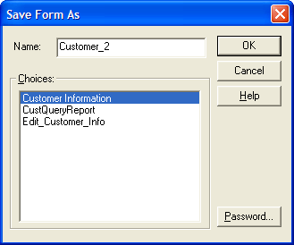
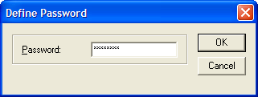

Password Protecting a Layout
If you want to ensure that only authorized users can change a layout, you can define a password for it. When a user attempts to edit a password protected layout, they must supply the password before the layout appears in the editor.
To password protect a layout:
Select File > Save As.
Click the Password button.
Enter a password and click OK.
Enter a name for the layout and click OK.

Save as Dialog Box with Password Button

Define Password Dialog Box